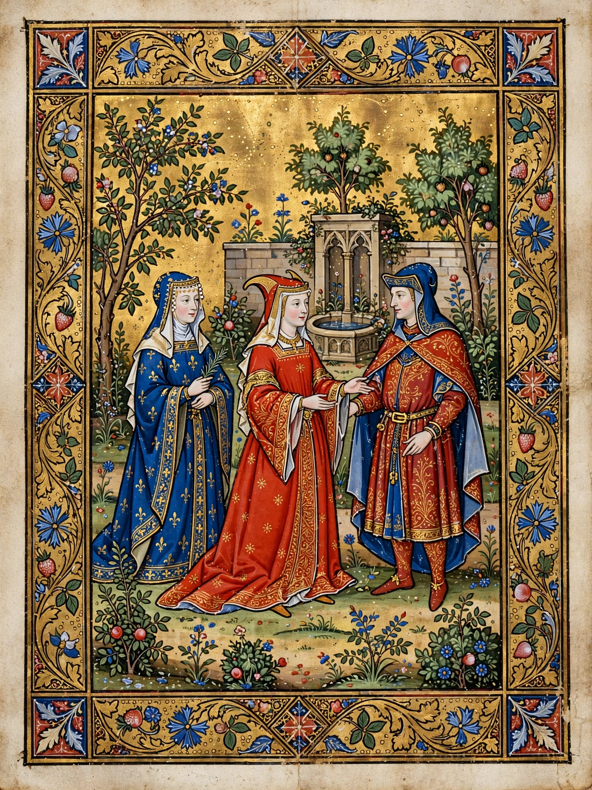

Miniature (illuminated manuscript)
A miniature (from the Latin verb miniare, "to colour with minium", or red lead) is a small illustration used to decorate an illuminated manuscript in the Middle Ages; the content of the images would usually have something to do with the text of the book, depicting scenes from the text or independent devotional images. The word is a false friend of "miniature" in the sense of "very small", though many manuscript miniatures are indeed small; the term derives from the red pigment rather than size.

History
The tradition of the manuscript miniature descends from late antique book illustration, preserved in works such as the Vergilius Romanus. Early medieval Insular manuscripts, Byzantine manuscripts and Islamic manuscripts each developed distinctive miniature traditions. In the Romanesque and Gothic periods, miniatures became the principal form of painting in northern Europe, and the finest books of hours produced for royal and aristocratic patrons in Paris, Flanders and Burgundy contain miniatures of extraordinary refinement by artists such as Jean Pucelle and the Limbourg brothers, creators of the Très Riches Heures du Duc de Berry.
Types
Miniatures may be full-page compositions, small scenes set within the text block, or historiated initials — large decorated letters containing figures or scenes. Marginal miniatures and bas-de-page scenes appear at the foot of the page, sometimes with humorous or fantastical drolleries unrelated to the text. In Persian, Ottoman and Mughal traditions, the miniature developed into a largely independent art form, often bound into albums (muraqqa).
Technique
Miniatures were painted in tempera — pigments bound with egg yolk or glair — on parchment or vellum, frequently heightened with shell gold or gold leaf laid over gesso. Workshops divided labour between scribes, rubricators, border artists and miniaturists, with the miniature typically executed after the text was written and spaces left for it.